English source text converted from the Wikipedia PDF (revision 1380046103)
There are many programs and algorithms used to plot the Mandelbrot set and other fractals, some of which are described in fractal-generating software. These programs use a variety of algorithms to determine the color of individual pixels efficiently.
The simplest algorithm for generating a representation of the Mandelbrot set is known as the “escape time” algorithm. A repeating calculation is performed for each x, y point in the plot area and based on the behavior of that calculation, a color is chosen for that pixel.
In both the unoptimized and optimized escape time algorithms, the x and y locations of each point are used as starting values in a repeating, or iterating calculation (described in detail below). The result of each iteration is used as the starting values for the next. The values are checked during each iteration to see whether they have reached a critical “escape” condition, or “bailout”. If that condition is reached, the calculation is stopped, the pixel is drawn, and the next x, y point is examined. For some starting values, escape occurs quickly, after only a small number of iterations. For starting values very close to but not in the set, it may take hundreds or thousands of iterations to escape. For values within the Mandelbrot set, escape will never occur. The programmer or user must choose how many iterations–or how much “depth”–they wish to examine. The higher the maximal number of iterations, the more detail and subtlety emerge in the final image, but the longer time it will take to calculate the fractal image.
Escape conditions can be simple or complex. Because no complex number with a real or imaginary part greater than 2 can be part of the set, a common bailout is to escape when either coefficient exceeds 2. A more computationally complex method that detects escapes sooner, is to compute distance from the origin using the Pythagorean theorem, i.e., to determine the absolute value, or modulus, of the complex number. If this value exceeds 2, or equivalently, when the sum of the squares of the real and imaginary parts exceed 4, the point has reached escape. More computationally intensive rendering variations include the Buddhabrot method, which finds escaping points and plots their iterated coordinates.
The color of each point represents how quickly the values reached the escape point. Often black is used to show values that fail to escape before the iteration limit, and gradually brighter colors are used for points that escape. This gives a visual representation of how many cycles were required before reaching the escape condition.
To render such an image, the region of the complex plane we are considering is subdivided into a certain number of pixels. To color any such pixel, let be the midpoint of that pixel. We now iterate the critical point 0 under , checking at each step whether the orbit point has modulus larger than 2. When this is the case, we know that does not belong to the Mandelbrot set, and we color our pixel according to the number of iterations used to find out. Otherwise, we keep iterating up to a fixed number of steps, after which we decide that our parameter is “probably” in the Mandelbrot set, or at least very close to it, and color the pixel black.
In pseudocode, this algorithm would look as follows. The algorithm does not use complex numbers and manually simulates complex-number operations using two real numbers, for those who do not have a complex data type. The program may be simplified if the programming language includes complex-data-type operations.
for each pixel (Px, Py) on the screen do
x0 := scaled x coordinate of pixel (scaled to lie in the Mandelbrot X scale (-2.00, 0.47))
y0 := scaled y coordinate of pixel (scaled to lie in the Mandelbrot Y scale (-1.12, 1.12))
x := 0.0
y := 0.0
iteration := 0
max_iteration := 1000
while (x*x + y*y ≤ 2*2 AND iteration < max_iteration) do
xtemp := x*x - y*y + x0
y := 2*x*y + y0
x := xtemp
iteration := iteration + 1
color := palette[iteration]
plot(Px, Py, color)Here, relating the pseudocode to , and :
and so, as can be seen in the pseudocode in the computation of x and y:
To get colorful images of the set, the assignment of a color to each value of the number of executed iterations can be made using one of a variety of functions (linear, exponential, etc.). One practical way, without slowing down calculations, is to use the number of executed iterations as an entry to a palette initialized at startup. If the color table has, for instance, 500 entries, then the color selection is n mod 500, where n is the number of iterations.
The code in the previous section uses an unoptimized inner while loop for clarity. In the unoptimized version, one must perform five multiplications per iteration. To reduce the number of multiplications the following code for the inner while loop may be used instead:
x2:= 0
y2:= 0
w:= 0
while (x2 + y2 ≤ 4 and iteration < max_iteration) do
x:= x2 - y2 + x0
y:= w - x2 - y2 + y0
x2:= x * x
y2:= y * y
w:= (x + y) * (x + y)
iteration:= iteration + 1The above code works via some algebraic simplification of the complex multiplication:
Using the above identity, the number of multiplications can be reduced to three instead of five.
The above inner while loop can be further optimized by expanding w to
Substituting w into yields and hence calculating w is no longer needed.
The further optimized pseudocode for the above is:
x:= 0
y:= 0
x2:= 0
y2:= 0
while (x2 + y2 ≤ 4 and iteration < max_iteration) do
x2:= x * x
y2:= y * y
y:= 2 * x * y + y0
x:= x2 - y2 + x0
iteration:= iteration + 1Note that in the above pseudocode, seems to increase the number of multiplications by 1, but since 2 is the multiplier the code can be optimized via .
In addition to plotting the set, a variety of algorithms have been developed to
A more complex coloring method involves using a histogram which pairs each pixel with said pixel’s maximum iteration count before escape/bailout. This method will equally distribute colors to the same overall area, and, importantly, is independent of the maximum number of iterations chosen.[1]
This algorithm has four passes. The first pass involves calculating
the iteration counts associated with each pixel (but without any pixels
being plotted). These are stored in an array
IterationCounts[x][y], where x and
y are the x and y coordinates of said pixel on the screen
respectively.
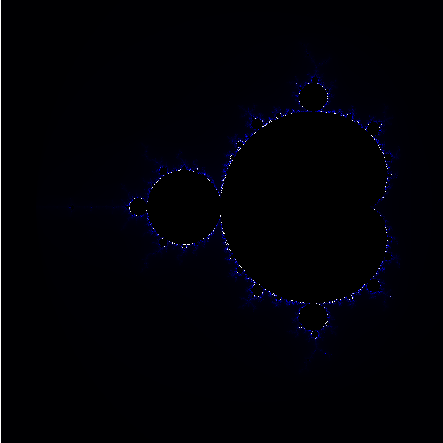 |
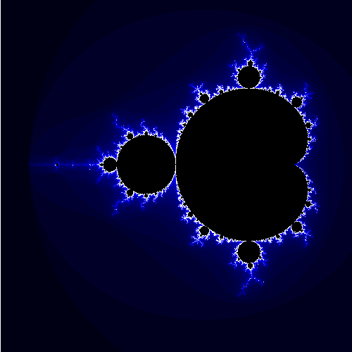 |
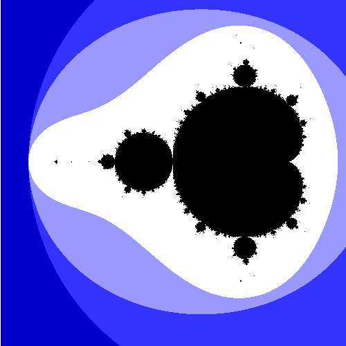 |
|---|---|---|
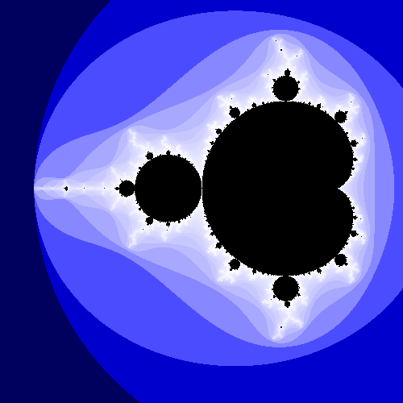 |
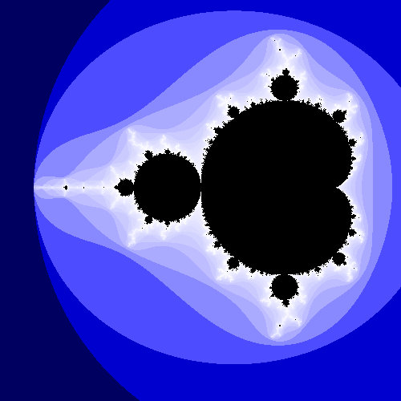 |
The first step of the second pass is to create an array
NumIterationsPerPixel[n], where the array size
n is the maximum iteration count. Next, one must iterate
over the array of pixel-iteration count pairs
IterationCounts[x][y], and retrieve each pixel’s saved
iteration count, i, via
e.g. i = IterationCounts[x][y]. After each pixel’s
iteration count i is retrieved, it is necessary to index the
NumIterationsPerPixel array at i and increment the
indexed value (which is initially zero) –
e.g. NumIterationsPerPixel[i] = NumIterationsPerPixel[i] + 1.
for (x = 0; x < width; x++) do
for (y = 0; y < height; y++) do
i:= IterationCounts[x][y]
NumIterationsPerPixel[i]++The third pass iterates through the NumIterationsPerPixel array and adds up all the stored values, saving them in total. The array index represents the number of pixels that reached that iteration count before bailout.
total: = 0
for (i = 0; i < max_iterations; i++) do
total += NumIterationsPerPixel[i]After this, the fourth pass begins and all the values in the IterationCounts array are indexed, and, for each iteration count i, associated with each pixel, the count is added to a global sum of all the iteration counts from 1 to i in the NumIterationsPerPixel array. This value is then normalized by dividing the sum by the total value computed earlier.
hue[][]:= 0.0
for (x = 0; x < width; x++) do
for (y = 0; y < height; y++) do
iteration:= IterationCounts[x][y]
for (i = 0; i <= iteration; i++) do
hue[x][y] += NumIterationsPerPixel[i] / total /* Must be floating-point division. */
...
color = palette[hue[m, n]]
...Finally, the computed value is used, e.g. as an index to a color palette.
This method may be combined with the smooth coloring method below for more aesthetically pleasing images.
The escape time algorithm is popular for its simplicity. However, it creates bands of color, which, as a type of aliasing, can detract from an image’s aesthetic value. This can be improved using an algorithm known as “normalized iteration count”,[2][3] which provides a smooth transition of colors between iterations. The algorithm associates a real number with each value of z by using the connection of the iteration number with the potential function. This function is given by
where zn is the value after n iterations and P is the power for which z is raised to in the Mandelbrot set equation (zn+1 = znP + c, P is generally 2).
If we choose a large bailout radius N (e.g., 10100), we have that
for some real number , and this is
and as n is the first iteration number such that |zn| > N, the number we subtract from n is in the interval [0, 1).
For the coloring we must have a cyclic scale of colors (constructed mathematically, for instance) and containing H colors numbered from 0 to H − 1 (H = 500, for instance). We multiply the real number by a fixed real number determining the density of the colors in the picture, take the integral part of this number modulo H, and use it to look up the corresponding color in the color table.
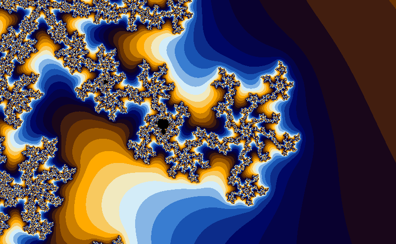
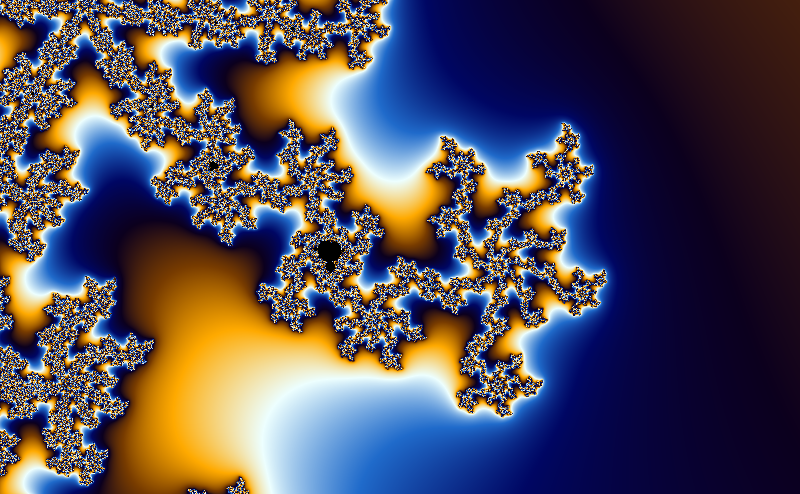
For example, modifying the above pseudocode and also using the concept of linear interpolation would yield
for each pixel (Px, Py) on the screen do
x0:= scaled x coordinate of pixel (scaled to lie in the Mandelbrot X scale (-2.5, 1))
y0:= scaled y coordinate of pixel (scaled to lie in the Mandelbrot Y scale (-1, 1))
x:= 0.0
y:= 0.0
iteration:= 0
max_iteration:= 1000
// Here N = 2^8 is chosen as a reasonable bailout radius.
while x*x + y*y ≤ (1 << 16) and iteration < max_iteration do
xtemp:= x*x - y*y + x0
y:= 2*x*y + y0
x:= xtemp
iteration:= iteration + 1
// Used to avoid floating point issues with points inside the set.
if iteration < max_iteration then
// sqrt of inner term removed using log simplification rules.
log_zn:= log(x*x + y*y) / 2
nu:= log(log_zn / log(2)) / log(2)
// Rearranging the potential function.
// Dividing log_zn by log(2) instead of log(N = 1<<8)
// because we want the entire palette to range from the
// center to radius 2, NOT our bailout radius.
iteration:= iteration + 1 - nu
color1:= palette[floor(iteration)]
color2:= palette[floor(iteration) + 1]
// iteration % 1 = fractional part of iteration.
color:= linear_interpolate(color1, color2, iteration % 1)
plot(Px, Py, color)Typically when we render a fractal, the range of where colors from a given palette appear along the fractal is static. If we desire to offset the location from the border of the fractal, or adjust their palette to cycle in a specific way, there are a few simple changes we can make when taking the final iteration count before passing it along to choose an item from our palette.
When we have obtained the iteration count, we can make the range of colors non-linear. Raising a value normalized to the range [0,1] to a power n, maps a linear range to an exponential range, which in our case can nudge the appearance of colors along the outside of the fractal, and allow us to bring out other colors, or push in the entire palette closer to the border.
where i is our iteration count after bailout, max_i is our iteration limit, S is the exponent we are raising iters to, and N is the number of items in our palette. This scales the iter count non-linearly and scales the palette to cycle approximately proportionally to the zoom.
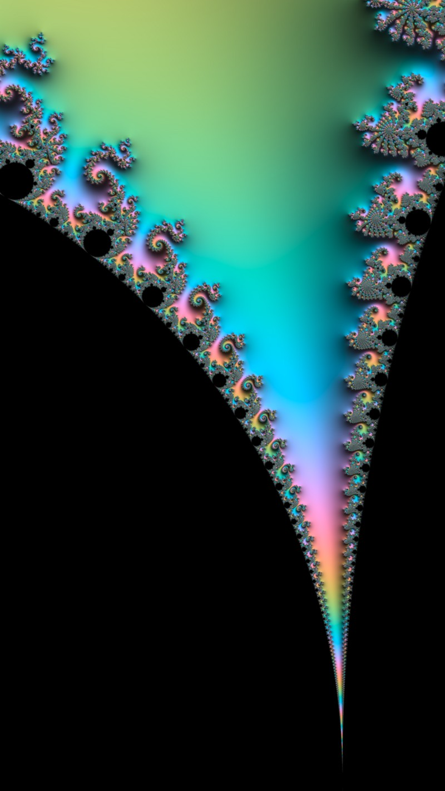
We can then plug v into whatever algorithm we desire for generating a color.
One thing we may want to consider is avoiding having to deal with a palette or color blending at all. There are actually a handful of methods we can leverage to generate smooth, consistent coloring by constructing the color on the spot.
A naive method for generating a color in this way is by directly scaling v to 255 and passing it into RGB as such
rgb = [v * 255, v * 255, v * 255]One flaw with this is that RGB is non-linear due to gamma; consider linear sRGB instead. Going from RGB to sRGB uses an inverse companding function on the channels. This makes the gamma linear, and allows us to properly sum the colors for sampling.
srgb = [v * 255, v * 255, v * 255]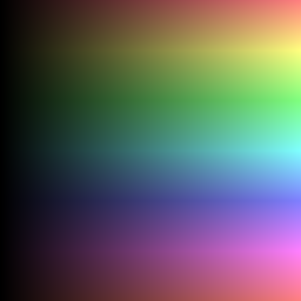
HSV Coloring can be accomplished by mapping iter count from [0,max_iter) to [0,360), taking it to the power of 1.5, and then modulo 360.
We can then simply take the exponentially mapped iter count into the value and return
hsv = [powf((i / max) * 360, 1.5) % 360, 100, (i / max) * 100]This method applies to HSL as well, except we pass a saturation of 50% instead.
hsl = [powf((i / max) * 360, 1.5) % 360, 50, (i / max) * 100]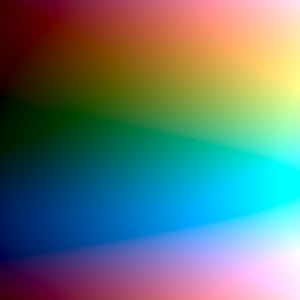
One of the most perceptually uniform coloring methods involves passing in the processed iter count into LCH. If we utilize the exponentially mapped and cyclic method above, we can take the result of that into the Luma and Chroma channels. We can also exponentially map the iter count and scale it to 360, and pass this modulo 360 into the hue.
One issue we wish to avoid here is out-of-gamut colors. This can be achieved with a little trick based on the change in-gamut colors relative to luma and chroma. As we increase luma, we need to decrease chroma to stay within gamut.
s = iters/max_i;
v = 1.0 - powf(cos(pi * s), 2.0);
LCH = [75 - (75 * v), 28 + (75 - (75 * v)), powf(360 * s, 1.5) % 360];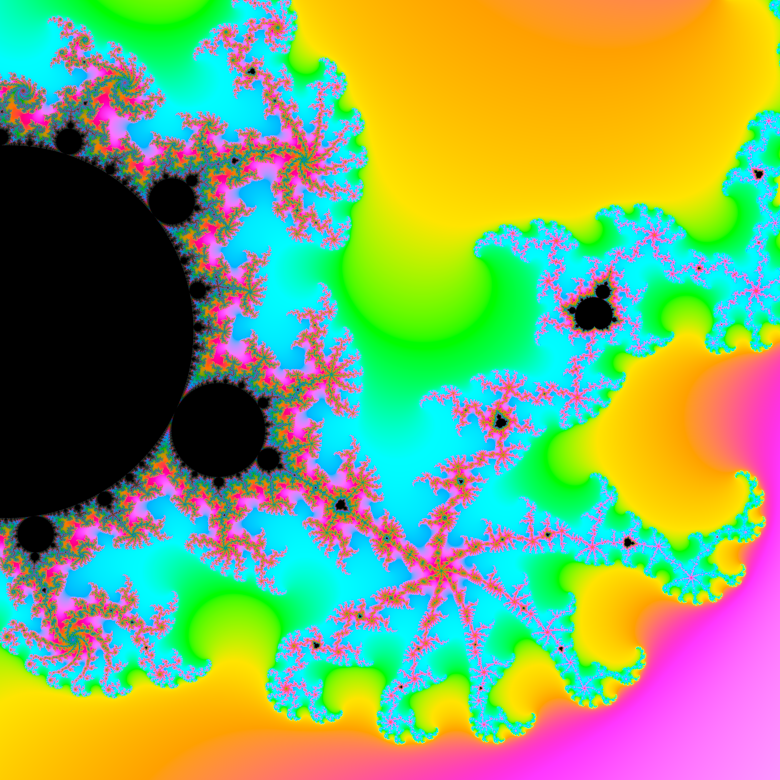
In addition to the simple and slow escape time algorithms already discussed, there are many other more advanced algorithms that can be used to speed up the plotting process.
One can compute the distance from point c (in exterior or interior) to nearest point on the boundary of the Mandelbrot set.[4][5]
The proof of the connectedness of the Mandelbrot set in fact gives a formula for the uniformizing map of the complement of (and the derivative of this map). By the Koebe quarter theorem, one can then estimate the distance between the midpoint of our pixel and the Mandelbrot set up to a factor of 4.
In other words, provided that the maximal number of iterations is sufficiently high, one obtains a picture of the Mandelbrot set with the following properties:
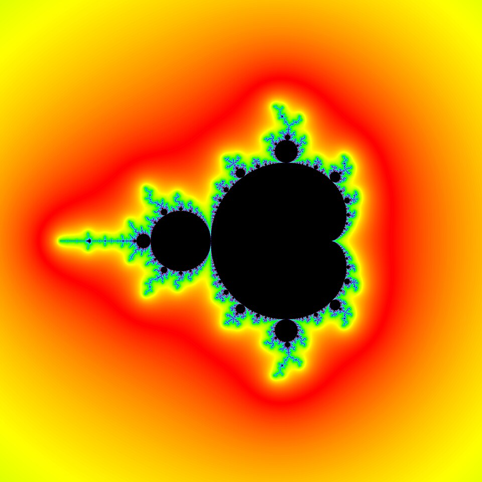
The upper bound b for the distance estimate of a pixel c (a complex number) from the Mandelbrot set is given by[6][7][8]
where
The idea behind this formula is simple: When the equipotential lines for the potential function lie close, the number is large, and conversely, therefore the equipotential lines for the function should lie approximately regularly.
From a mathematician’s point of view, this formula only works in limit where n goes to infinity, but very reasonable estimates can be found with just a few additional iterations after the main loop exits.
Once b is found, by the Koebe 1/4-theorem, we know that there is no point of the Mandelbrot set with distance from c smaller than b/4.
The distance estimation can be used for drawing of the boundary of the Mandelbrot set, see the article Julia set. In this approach, pixels that are sufficiently close to M are drawn using a different color. This creates drawings where the thin “filaments” of the Mandelbrot set can be easily seen. This technique is used to good effect in the B&W images of Mandelbrot sets in the books “The Beauty of Fractals[9]” and “The Science of Fractal Images”.[10]
Here is a sample B&W image rendered using Distance Estimates:
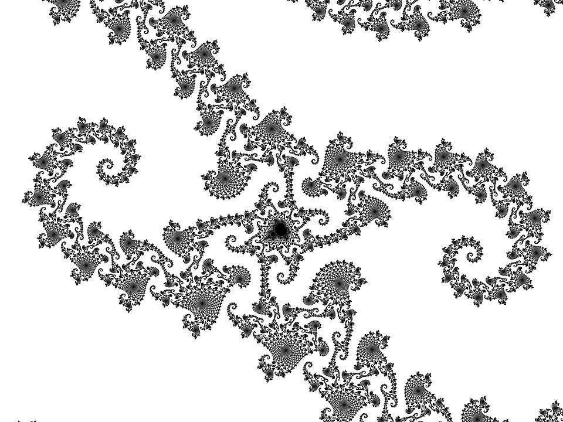
Distance Estimation can also be used to render 3D images of Mandelbrot and Julia sets
It is also possible to estimate the distance of a limitly periodic (i.e., hyperbolic) point to the boundary of the Mandelbrot set. The upper bound b for the distance estimate is given by[4]
where
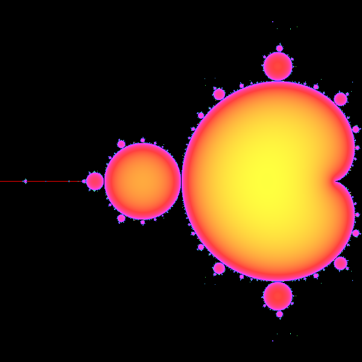
Analogous to the exterior case, once b is found, we know that all points within the distance of b/4 from c are inside the Mandelbrot set.
There are two practical problems with the interior distance estimate: first, we need to find precisely, and second, we need to find precisely. The problem with is that the convergence to by iterating requires, theoretically, an infinite number of operations. The problem with any given is that, sometimes, due to rounding errors, a period is falsely identified to be an integer multiple of the real period (e.g., a period of 86 is detected, while the real period is only 43=86/2). In such case, the distance is overestimated, i.e., the reported radius could contain points outside the Mandelbrot set.
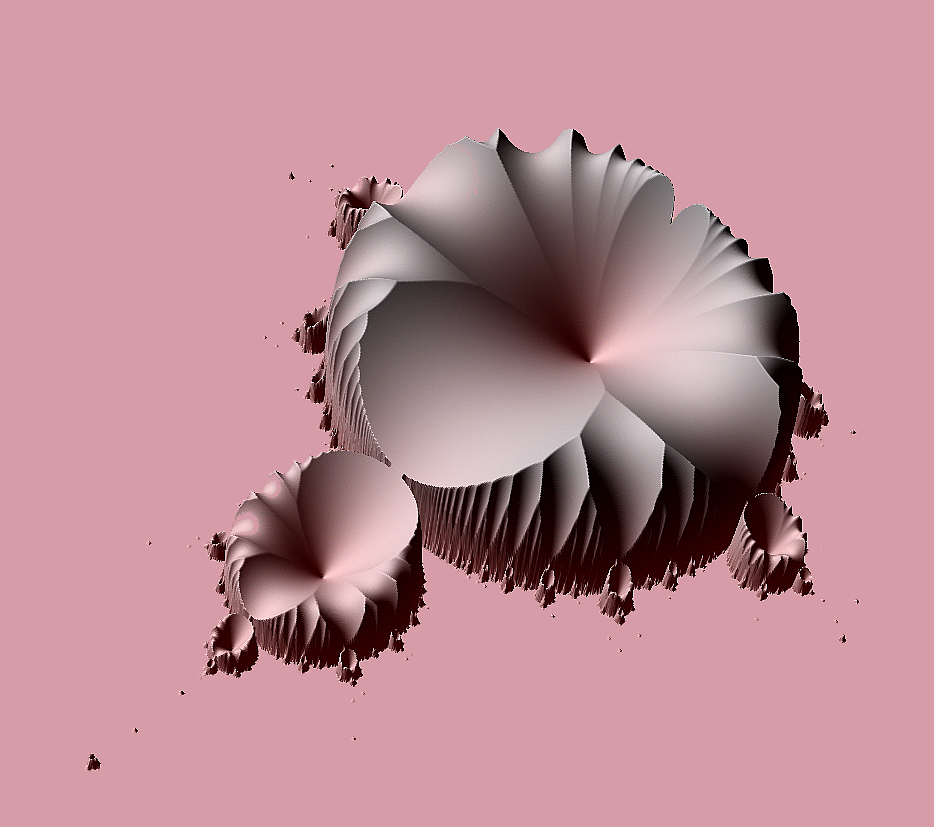
One way to improve calculations is to find out beforehand whether the given point lies within the cardioid or in the period-2 bulb. Before passing the complex value through the escape time algorithm, first check that:
where x represents the real value of the point and y the imaginary value. The first two equations determine that the point is within the cardioid, the last the period-2 bulb.
The cardioid test can equivalently be performed without the square root:
3rd- and higher-order buds do not have equivalent tests, because they are not perfectly circular.[11] However, it is possible to find whether the points are within circles inscribed within these higher-order bulbs, preventing many, though not all, of the points in the bulb from being iterated.
To prevent having to do huge numbers of iterations for points inside the set, one can perform periodicity checking, which checks whether a point reached in iterating a pixel has been reached before. If so, the pixel cannot diverge and must be in the set. Periodicity checking is a trade-off, as the need to remember points costs data management instructions and memory, but saves computational instructions. However, checking against only one previous iteration can detect many periods with little performance overhead. For example, within the while loop of the pseudocode above, make the following modifications:
xold := 0
yold := 0
period := 0
while (x*x + y*y ≤ 2*2 and iteration < max_iteration) do
xtemp := x*x - y*y + x0
y := 2*x*y + y0
x := xtemp
iteration := iteration + 1
if x ≈ xold and y ≈ yold then
iteration := max_iteration /* Set to max for the color plotting */
break /* We are inside the Mandelbrot set, leave the while loop */
period:= period + 1
if period > 20 then
period := 0
xold := x
yold := yThe above code stores away a new x and y value on every 20th iteration, thus it can detect periods that are up to 20 points long.
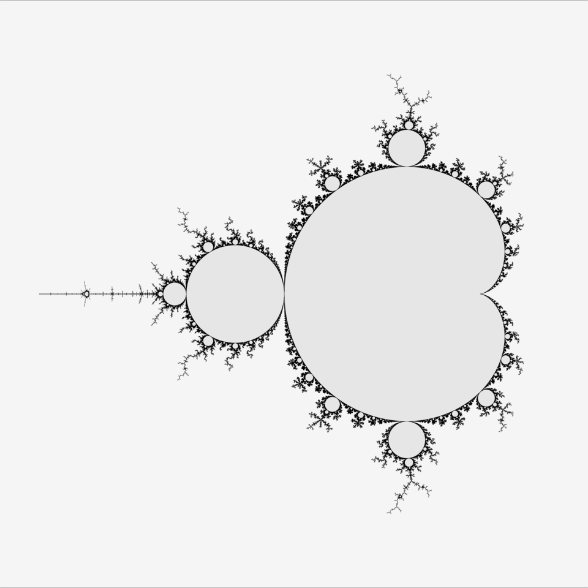
Because the Mandelbrot set is full,[12] any point enclosed by a closed shape whose borders lie entirely within the Mandelbrot set must itself be in the Mandelbrot set. Border tracing works by following the lemniscates of the various iteration levels (colored bands) all around the set, and then filling the entire band at once. This also provides a speed increase because large numbers of points can be now skipped.[13]
In the animation shown, points outside the set are colored with a 1000-iteration escape time algorithm. Tracing the set border and filling it, rather than iterating the interior points, reduces the total number of iterations by 93.16%. With a higher iteration limit the benefit would be even greater.
Rectangle checking is an older and simpler method for plotting the Mandelbrot set. The basic idea of rectangle checking is that if every pixel in a rectangle’s border shares the same amount of iterations, then the rectangle can be safely filled using that number of iterations. There are several variations of the rectangle checking method, however, all of them are slower than the border tracing method because they end up calculating more pixels. One variant just calculates the corner pixels of each rectangle, however, this causes damaged pictures more often than calculating the entire border, thus it only works reasonably well if only small boxes of around 6x6 pixels are used, and no recursing in from bigger boxes. (Fractint method.)
The most simple rectangle checking method lies in checking the borders of equally sized rectangles, resembling a grid pattern. (Mariani’s algorithm.)[14]
A faster and slightly more advanced variant is to first calculate a bigger box, say 25x25 pixels. If the entire box border has the same color, then just fill the box with the same color. If not, then split the box into four boxes of 13x13 pixels, reusing the already calculated pixels as outer border, and sharing the inner “cross” pixels between the inner boxes. Again, fill in those boxes that has only one border color. And split those boxes that don’t, now into four 7x7 pixel boxes. And then those that “fail” into 4x4 boxes. (Mariani-Silver algorithm.)
Even faster is to split the boxes in half instead of into four boxes. Then it might be optimal to use boxes with a 1.4:1 aspect ratio, so they can be split like how A3 papers are folded into A4 and A5 papers. (The DIN approach.)
As with border tracing, rectangle checking only works on areas with one discrete color. But even if the outer area uses smooth/continuous coloring then rectangle checking will still speed up the costly inner area of the Mandelbrot set. Unless the inner area also uses some smooth coloring method, for instance interior distance estimation.
The horizontal symmetry of the Mandelbrot set allows for portions of the rendering process to be skipped upon the presence of the real axis in the final image. However, regardless of the portion that gets mirrored, the same number of points will be rendered.
Julia sets have symmetry around the origin. This means that quadrant 1 and quadrant 3 are symmetric, and quadrants 2 and quadrant 4 are symmetric. Supporting symmetry for both Mandelbrot and Julia sets requires handling symmetry differently for the two different types of graphs.
Escape-time rendering of Mandelbrot and Julia sets lends itself extremely well to parallel processing. On multi-core machines the area to be plotted can be divided into a series of rectangular areas which can then be provided as a set of tasks to be rendered by a pool of rendering threads. This is an embarrassingly parallel[15] computing problem. (Note that one gets the best speed-up by first excluding symmetric areas of the plot, and then dividing the remaining unique regions into rectangular areas.)[16]
Here is a short video showing the Mandelbrot set being rendered using multithreading and symmetry, but without boundary following:
Finally, here is a video showing the same Mandelbrot set image being rendered using multithreading, symmetry, and boundary following:
Very highly magnified images require more than the standard 64–128 or so bits of precision that most hardware floating-point units provide, requiring renderers to use slow “BigNum” or “arbitrary-precision” math libraries to calculate. However, this can be sped up by the exploitation of perturbation theory. Given
as the iteration, and a small epsilon and delta, it is the case that
or
so if one defines
one can calculate a single point (e.g. the center of an image) using high-precision arithmetic (z), giving a reference orbit, and then compute many points around it in terms of various initial offsets delta plus the above iteration for epsilon, where epsilon-zero is set to 0. For most iterations, epsilon does not need more than 16 significant figures, and consequently hardware floating-point may be used to get a mostly accurate image.[17] There will often be some areas where the orbits of points diverge enough from the reference orbit that extra precision is needed on those points, or else additional local high-precision-calculated reference orbits are needed. By measuring the orbit distance between the reference point and the point calculated with low precision, it can be detected that it is not possible to calculate the point correctly, and the calculation can be stopped. These incorrect points can later be re-calculated e.g. from another closer reference point.
Further, it is possible to approximate the starting values for the low-precision points with a truncated Taylor series, which often enables a significant amount of iterations to be skipped.[18] Renderers implementing these techniques are publicly available and offer speedups for highly magnified images by around two orders of magnitude.[19][20]
An alternate explanation of the above:
For the central point in the disc and its iterations , and an arbitrary point in the disc and its iterations , it is possible to define the following iterative relationship:
With . Successive iterations of can be found using the following:
Now from the original definition:
It follows that:
As the iterative relationship relates an arbitrary point to the central point by a very small change , then most of the iterations of are also small and can be calculated using floating point hardware.
However, for every arbitrary point in the disc it is possible to calculate a value for a given without having to iterate through the sequence from , by expressing as a power series of .
With .
Now given the iteration equation of , it is possible to calculate the coefficients of the power series for each :
Therefore, it follows that:
The coefficients in the power series can be calculated as iterative series using only values from the central point’s iterations , and do not change for any arbitrary point in the disc. If is very small, should be calculable to sufficient accuracy using only a few terms of the power series. As the Mandelbrot Escape Contours are ‘continuous’ over the complex plane, if a point’s escape time has been calculated, then the escape time of that point’s neighbours should be similar. Interpolation of the neighbouring points should provide a good estimation of where to start in the series.
Further, separate interpolation of both real axis points and imaginary axis points should provide both an upper and lower bound for the point being calculated. If both results are the same (i.e. both escape or do not escape) then the difference can be used to recuse until both an upper and lower bound can be established. If floating point hardware can be used to iterate the series, then there exists a relation between how many iterations can be achieved in the time it takes to use BigNum software to compute a given . If the difference between the bounds is greater than the number of iterations, it is possible to perform binary search using BigNum software, successively halving the gap until it becomes more time efficient to find the escape value using floating point hardware.
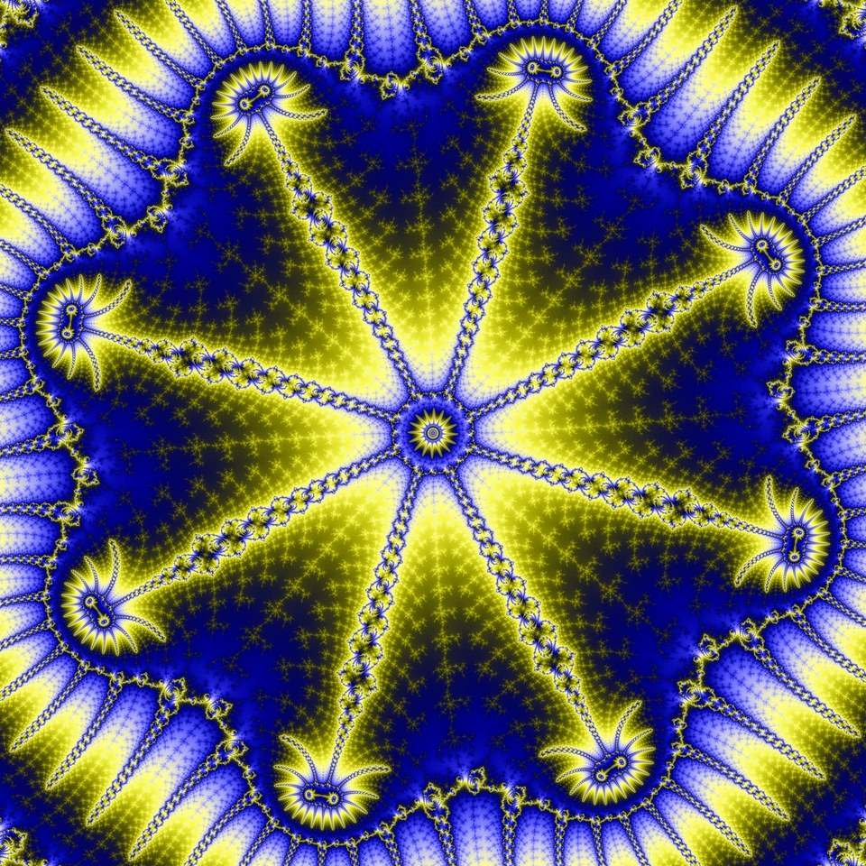 |
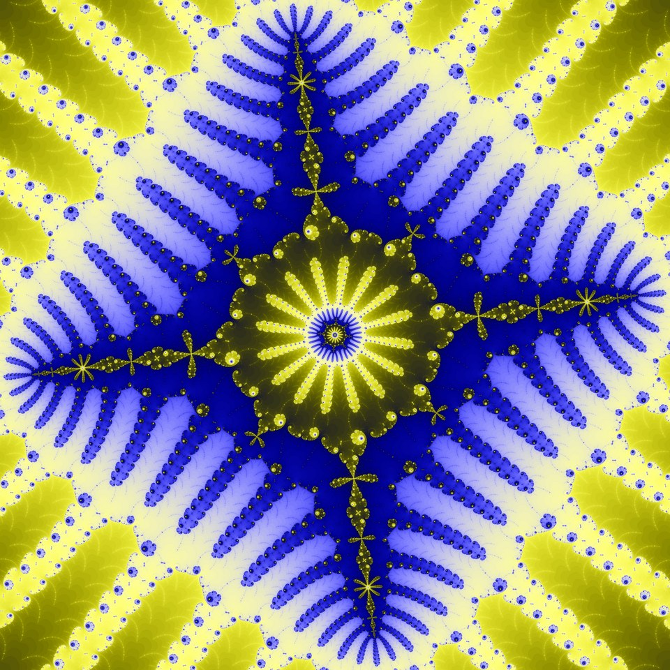 |
|
|---|---|---|
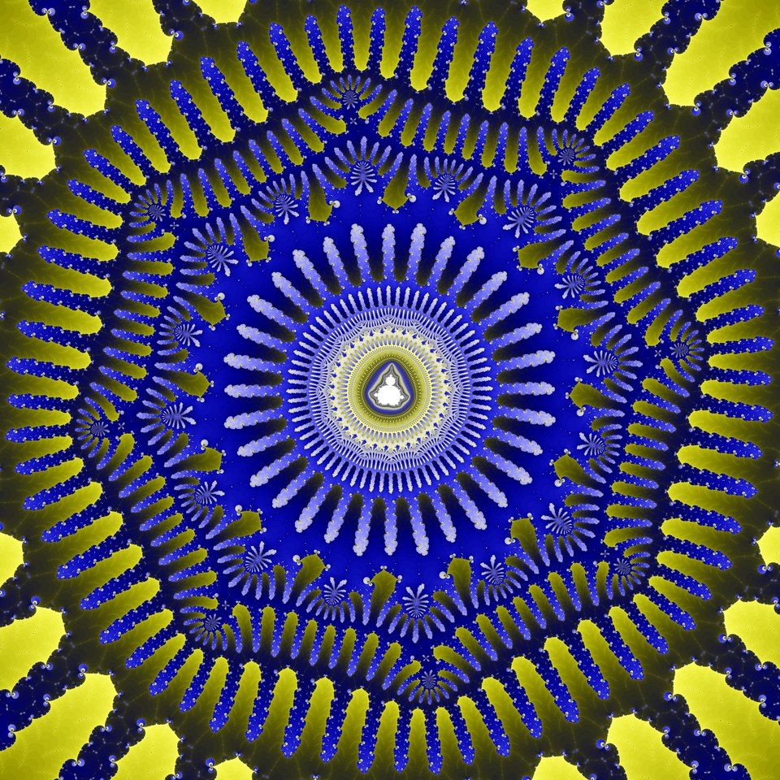 |
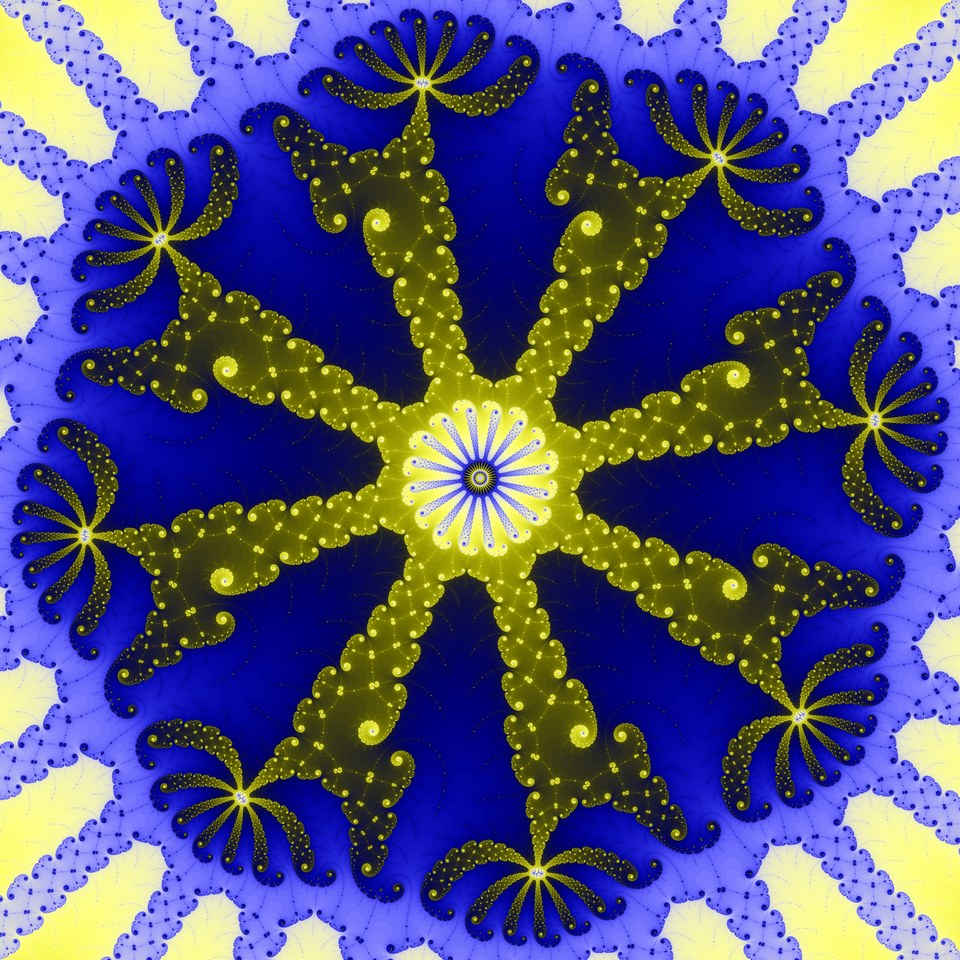 |
Retrieved from “https://en.wikipedia.org/w/index.php?title=Plotting_algorithms_for_the_Mandelbrot_set&oldid=1380046103”
Text is available under the Creative Commons Attribution-ShareAlike License 4.0; additional terms may apply. Media files are licensed as stated in LICENSES.md.